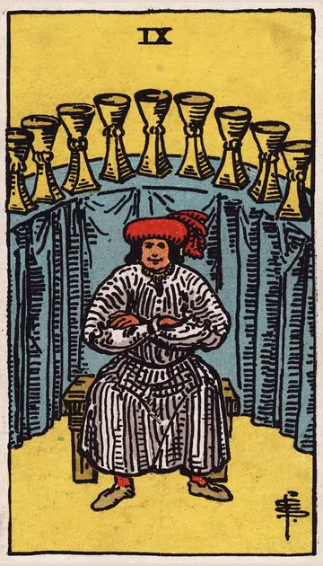

正位置カップの9の正位置
キーワード：満足・願いが叶う・喜び
恋愛
願いが叶いやすく、満ち足りた気持ちになれる時です。
相手の気持ちあなたとの関係に、満足しているようです。
この先願っていた恋が、叶いそうです。
アドバイス願いを、素直に口にしてみましょう。
気をつけること自分の満足だけで、相手を見落とさないように。
この先願っていた恋が、叶いそうです。
アドバイス願いを、素直に口にしてみましょう。
気をつけること自分の満足だけで、相手を見落とさないように。
人間関係
人間関係に満足できる時です。
相手の気持ちあなたといると幸せだと感じているようです。
この先楽しい時間を分かち合える仲間に恵まれそうです。
アドバイス周りの人に、喜びをおすそ分けしましょう。
気をつけること自慢話にならないように。
この先楽しい時間を分かち合える仲間に恵まれそうです。
アドバイス周りの人に、喜びをおすそ分けしましょう。
気をつけること自慢話にならないように。
仕事・学業
望んだ成果が得られ、満足感を味わえる時期です。
この先大きな目標を達成できそうです。
アドバイス目標を達成したら、自分をしっかりほめましょう。
気をつけること満足して、成長を止めないように。
アドバイス目標を達成したら、自分をしっかりほめましょう。
気をつけること満足して、成長を止めないように。
お金
お金の面で、願いが叶いやすい時です。
この先満足できるお金の状態になりそうです。
アドバイス欲しかった物を、手に入れてみましょう。
気をつけることぜいたくが続かないように。
アドバイス欲しかった物を、手に入れてみましょう。
気をつけることぜいたくが続かないように。
生活
暮らしに、満足感を得られる時です。
この先願っていた暮らしが叶いそうです。
アドバイス今の暮らしの良さを、じっくり味わいましょう。
気をつけること満足して、だらけすぎないように。
アドバイス今の暮らしの良さを、じっくり味わいましょう。
気をつけること満足して、だらけすぎないように。
今日の運勢
良いことがありそうな、うれしい日です。
この先うれしい出来事がありそうです。
アドバイス好きなことを、思いきり楽しみましょう。
気をつけること食べすぎや使いすぎに気をつけて。
アドバイス好きなことを、思いきり楽しみましょう。
気をつけること食べすぎや使いすぎに気をつけて。
逆位置カップの9の逆位置
キーワード：物足りなさ・慢心・欲張り
恋愛
満たされているのに、物足りなさを感じやすい時です。
相手の気持ちあなたとの関係に、何か物足りなさを感じているようです。
この先本当に大切なものに気づけば、心が満たされそうです。
アドバイス今ある幸せを、数えてみましょう。
気をつけること相手に求めすぎないように。
この先本当に大切なものに気づけば、心が満たされそうです。
アドバイス今ある幸せを、数えてみましょう。
気をつけること相手に求めすぎないように。
人間関係
自分の都合を優先しやすい時です。
相手の気持ちあなたに、もっと多くを求めているようです。
この先思いやりを持てば、関係が深まりそうです。
アドバイス相手の望みにも、耳を傾けましょう。
気をつけることわがままが、相手を疲れさせないように。
この先思いやりを持てば、関係が深まりそうです。
アドバイス相手の望みにも、耳を傾けましょう。
気をつけることわがままが、相手を疲れさせないように。
仕事・学業
思ったほどの満足感が得られない時期です。
この先目標を見直せば、満足できる結果になりそうです。
アドバイス本当に欲しい成果は何か、見直しましょう。
気をつけること見栄えだけの成果を追わないように。
アドバイス本当に欲しい成果は何か、見直しましょう。
気をつけること見栄えだけの成果を追わないように。
お金
欲が出て、お金を使いすぎやすい時です。
この先落ち着けば、ゆとりが戻りそうです。
アドバイスほどほどで満足する練習をしましょう。
気をつけること見栄での出費に気をつけて。
アドバイスほどほどで満足する練習をしましょう。
気をつけること見栄での出費に気をつけて。
生活
満たされているのに、物足りなさを感じやすい時です。
この先ささやかな幸せに気づけそうです。
アドバイス今ある幸せを、数えてみましょう。
気をつけること足りないものばかり見ないように。
アドバイス今ある幸せを、数えてみましょう。
気をつけること足りないものばかり見ないように。
今日の運勢
欲張りたくなる日です。
この先ささやかな幸せに気づけそうです。
アドバイスほどほどで満足する練習をしてみましょう。
気をつけること衝動買いに気をつけて。
アドバイスほどほどで満足する練習をしてみましょう。
気をつけること衝動買いに気をつけて。
このページの文章は、アプリ「ひとやすみタロット」の結果に使っている文章です。アプリでは、あなたの相談や、カードが出た位置（今の状況・これからの流れ・アドバイス）に合わせて、この中から文章を選びます。逆位置の読み方は逆位置のことをご覧ください。
「カップの9」が出たら、あなたの相談ではどう読む？
アプリでは、質問への答えに合わせて、カードの言葉をあなたの相談に合わせて届けます。
Android 対応・会員登録なし